#DeLit-day
Building your own chatbots
#DeLit-day Tutorials, essential-skills for everyone.
Summit Handout June 2020
------------------------------------------------
Modules
Creating an account in dialogflow
4->Prompting the user for input
6->Implementation of small talk
7->Integration
8->Conclusion
-What is chatbot? -
Sometimes we wonder while messaging certain numbers or pages in facebook, the messages are quickly read and responded as if a human is interacting with us. This is due to the use of chatbots in their application.
Chatbot can be defined as AI based computer program that simulates human conversations. They are also known as digital assistants that understand human capabilities. Bots interpret and process the user requests and give prompt relevant answers.
According to forbes, the chatbot market is forecasted to reach $1.25 billion by 2025.
Bots can through voice as well as text and can be deployed across websites, applications and messaging channels such as Facebook Messenger, Twitter or Whatsapp or Telegram.
Chatbots can be developed in two formats:
● Drag and drop
● Coding.
Drag & drop or non-coding based chatbot platforms
● Chatfuel - The user interface is simple with rich UI elements. Limited to Facebook only.
● Motion AI - With simple interface and customization, it is beneficial in bringing many services together and automating several internal processes.
● Chattabot - It is ready to use -Bot Platforms- with lots of features
● Botsify - It is quite similar to Chatfuel and mainly used for creating bots for Facebook Messengers. Also allows wordpress integration.
The main disadvantage is the lack of NLP of data.
Code-based platforms
● IBM Watson - AI based flow builder with natural language understanding.
● Wit - It is easy for developers to build applications that you can talk or text to. You can also create unique stories for your chatbot
● Microsoft Bot Framework - Allow you to connect to multiple messaging platforms including Slack, Facebook Messenger, Skype, Telegram, etc
For our tutorial, we will be using dialogflow because of the following advantages:
- Free to use for small and medium business
- Can be deployed in many platforms
- No coding
- Uses Natural language processing,machine learning.
- Easy to implement
- The chatbot can be developed in multiple languages.
- You can export JSON file
The chatbot using dialogflow works on the principle of NLP (Natural Language Processing)
NLU is the ability of the chatbot to understand a human. It is the process of converting text into structured data for a machine to understand. NLU follows three specific concepts. They are: entities, context, and expectations.
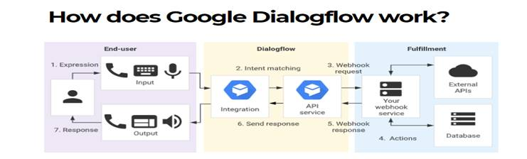
● Reduce customer waiting time
● 24-7 availability
● Better customer engagement
● Save customer service costs
The use of chatbot for various purposes in shown as a chart below:
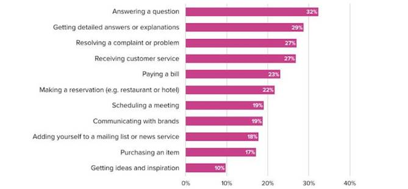
At the end of this course you will be able to build a simple chatbot within 10 mins and deploy in one of the platforms that is telegram.And you will be able to converse with my developed chatbot.
----------- Before starting our journey in creating our own chatbot,you can work and see how my chatbot which I have developed for the registration of alumni- for DeLit summit -2020- by typing @Bavani_bot in telegram.
-Excited to start learning !!!- Let-s begin
--------
--------------- For this tutorial you don-t need to install any software into your computer so you will not have any installation problems.That-s a good news indeed.
All you need is a google account and google chrome with good internet connection.
In case if you have any doubt while creating this chatbot I have attached the links with the content.
Part-1: Creating an account in dialogflow
Open google chrome and type dialogflow in the search tab.
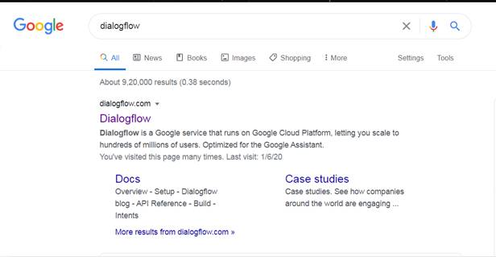
-Click the 1st website that appears on the screen to get started in creating your own chatbots.
Once you enter into the website you will see the home page of the dialogflow.
If you have already had an account in dialogflow click go to console
Else click sign up for free and click the google account that you want to link your chatbots. Incase if you don-t have a google account then create an account in order to use dialogflow.
If you already have an account linked with dialogflow then you will directed to the bot which you have already created via this platform.
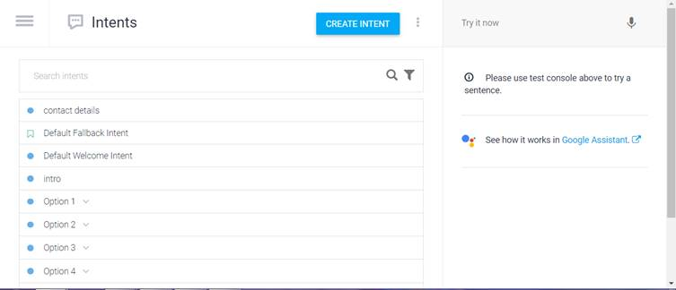
Now click the three lines icon on the top left corner.
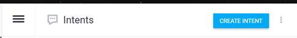
On clicking the icon, you will get a side bar with lot of options.
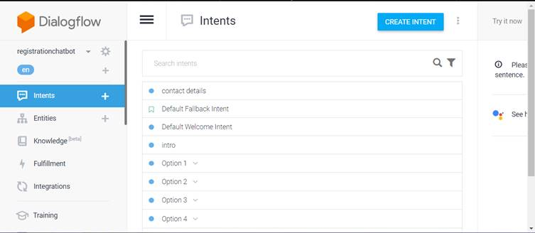
To create a new agent click the drop down menu and click create new agent to create a new chatbot.
What is an agent?
A Dialogflow agent is a virtual agent that handles conversations with your end-users. It is a natural language understanding module that understands the nuances of human language. Dialogflow translates end-user text or audio during a conversation to structured data that your apps and services can understand. You design and build a Dialogflow agent to handle the types of conversations required for your system.
In other words, the bot which you are going to develop is called as agent.
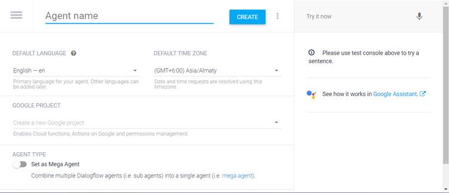
Now type your chatbot name that you want to develop in the agent name text field .
Since in this tutorial i am going to create a chatbot for booking rooms in hotels my agent name is Hotelbookingchatbot-Tutorial
-(NOTE: There should be no space between the words while you type the bot name)
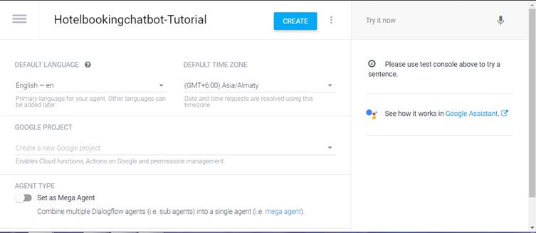
Click the language in which you want to develop your bot (there are nearly 23 languages which are supported by dialogflow) and the time zone and click create. When the create button is clicked the tab changes to working and your bot is being prepared to start its actions.

When your bot is successfully created you would get a screen as shown with two default intents:
1. Default welcome intent.
2.Default fallback intent.
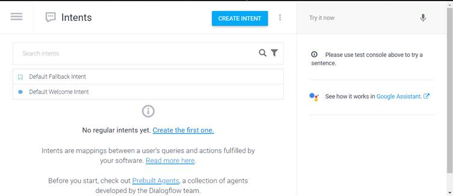
The default welcome intent is the place where the 1st message of your bot displays when the user starts the conversation with the bot. It is similar to constructors1 which gets executed automatically when the conversation begins.
The default fallback intent is one which displays the message to the user when the user types a sentence/phrase which the bot could not understand or the phrase which does not match with the training phrases
Part-3: Set up your welcome message
Now to check whether the bot which we created is working properly click the default welcome intent
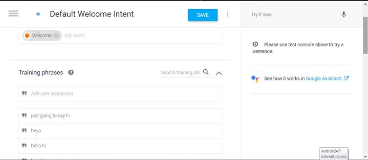
The above page appears and in the response tab you can type your own response or have the default responses of the bot. The snapshot below shows the default responses when the user begins the conversation.
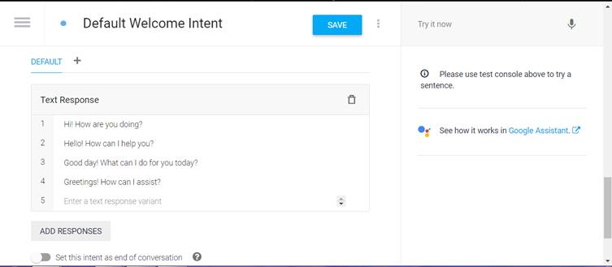
If you want your own response then click the delete button on the right .
Then click add responses and click text
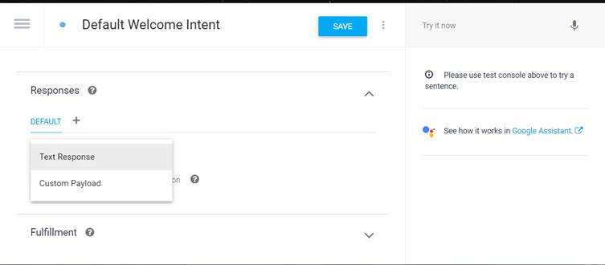
And type the response that you want to display.
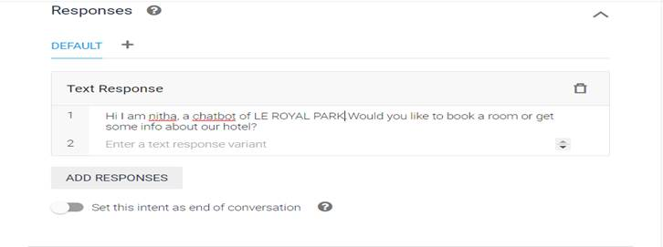
Don-t forget to always Save before you test the Intent or if you leave the page. Otherwise the changes won-t take effect.
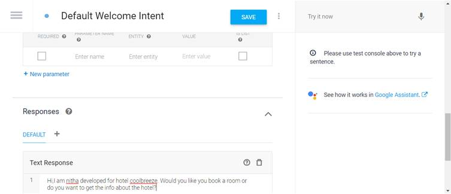Also, you should wait for Dialogflow-s training to be complete if you know you did everything right, but it-s not working. Two pop-ups will appear in the bottom right corner of the screen when the Agent started and finished training.
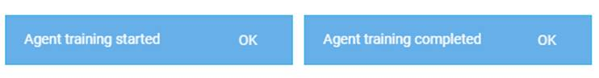
Now we have trained our bot to welcome the user when the user starts the conversation.
To check whether it is working properly type hello in the side pane
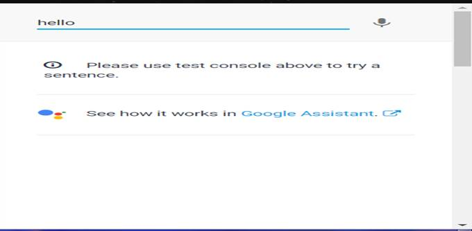
When you press enter you will able to see the response below that you gave in the response tab of default welcome intent.In case you didn-t get check whether you have enabled the service key of your google account.
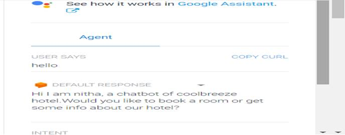
Now the bot is successfully developed and tested. Now we will continue to develop the bot with the logic for further conversation.
First we will create an intent to book a room in the hotel . To create an intent click create intent on the right side of the home page.
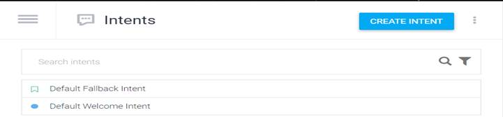
A new intent will be created now type the name that you want to create.
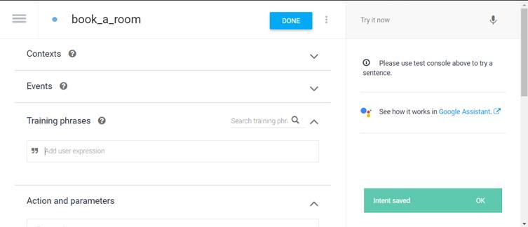
Next we have to train the bot with the phrases that the customer uses to chat with the bot.
You can train the bot in the training phrase section.
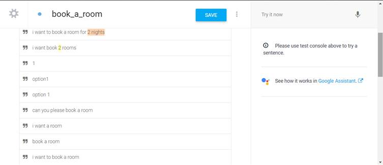
These are the list of expressions that I have used in the training phrase for booking a room in the hotel.
Here you can notice the top 2 phrases that the number 2 has been coloured with different colours such as brown and yellow.Those are called as entities.
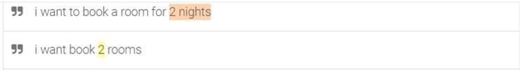
Entities are a mechanism in Dialogflow for identifying and extracting useful data from natural-language inputs.
An Entity is a property which can be used by Dialogflow to answer the request from the user - the entity will usually be a keyword within the request such as a name, date, location etc. When the user speaks or types their request, Dialogflow will look for the entity and the value of the given entity can be used within the request.
Dialogflow already contains a set of pre-defined system entities like (@sys.number, @sys.duration, @sys.person) which can be used when constructing intent. The intents that you have used in the training phrases can be seen in the Action and Parameter block.
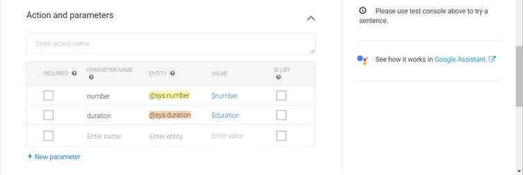
Prompting input from the user:
Now we have ask the customer about the no of nights of stay and the number of rooms that he wants to stay in the hotel.
This can be done in the Actions and parameters section.
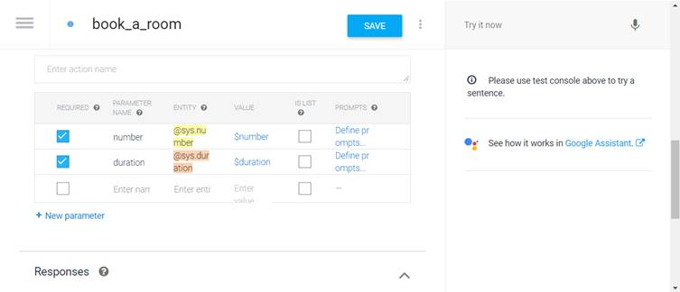
Since both the inputs are required for room booking check the checkbox of required column and type the message that you want to prompt the user when he fails to provide the input.The message can be typed in the prompts column.
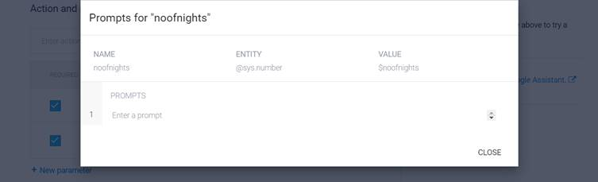
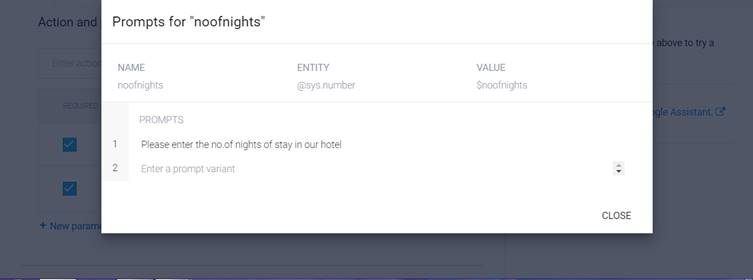
Type the message and click close.
Similarly create prompts for name, email and phone-number.
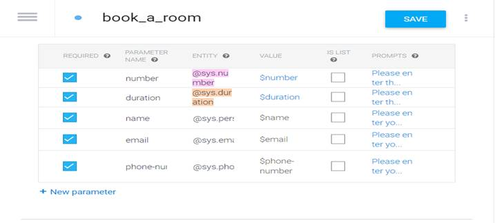
Displaying the user name at the response tab:
To display the user-s name at the response tab type $(name of the entity) which is present in the value column of the action section.
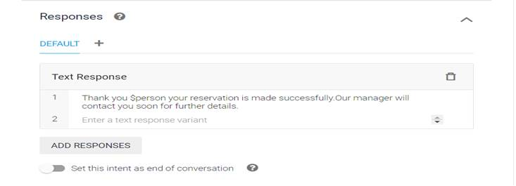
Now we will create another intent for displaying the hotel info such as address and phone-number.
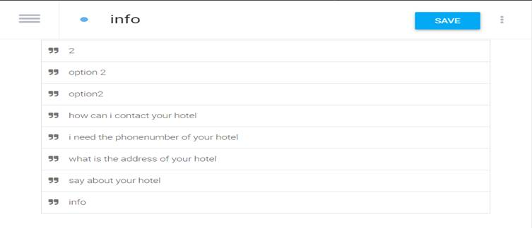
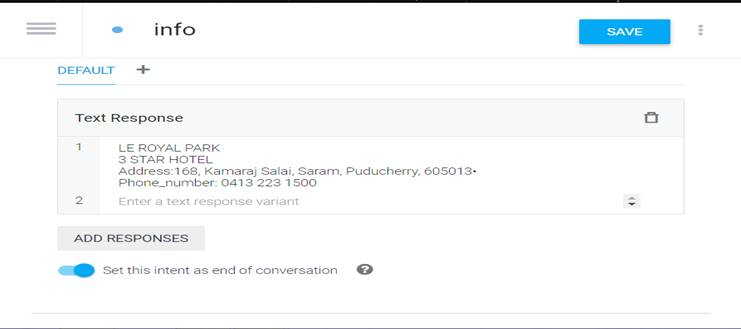
Sometimes if you don-t want to build from scratch. You can use the templates which are already developed for certain topics by dialogflow.You can access them in the prebuild agents in the side menu.
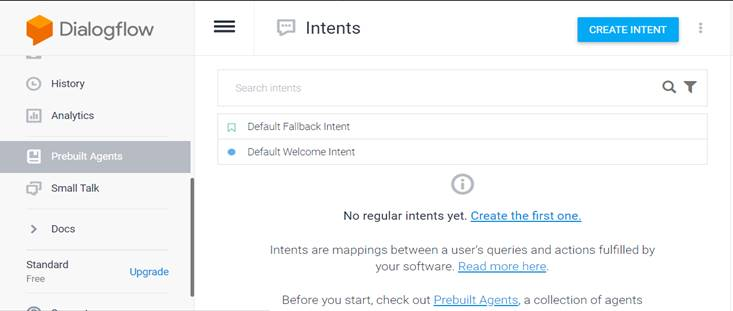
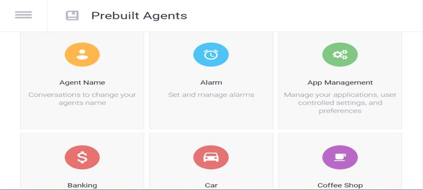
A lot of options are available.select the bot which you want to implement. Click import
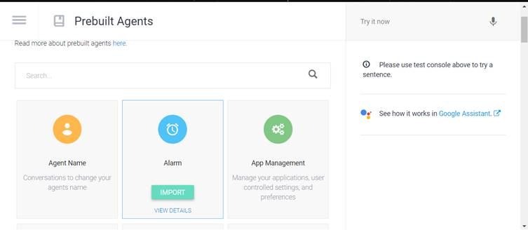
The bot will be created automatically with the intents and training phrases, you can add the response of the required type which you want to present to the users and also additional intents that you want.
Small talk is used to provide responses to casual conversation like appreciation, thankful and some common conversation. This feature can greatly improve the end-user experience by answering common questions outside the scope of your agent.
To enable small talk for your chatbot click small talk on the side menu and click enable and click save.

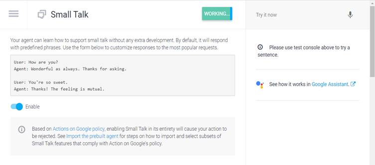
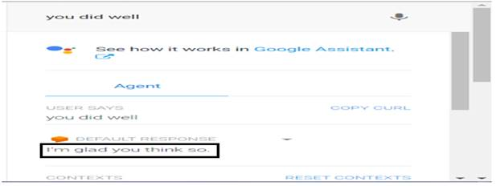
So when the customer types you did well the bot automatically replies with the message I-m glad you think so with the help of small talk and the developer don-t need to train the bot with these phrases.
Last Step: Integration
Chatbot can be integrated in different platforms like facebook messenger, whatsapp, twitter, slack, telegram for messages and telephony gateway for calls.
In this tutorial we will be integrating it in telegram.
Web demo is provided by the dialogflow itself which provides a chat screen for conversing with the chatbot.
This can be done by clicking integrations in the side menu and click web demo
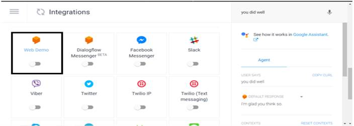
And when you swipe the slider of web demo
-
, you will get a dialogbox as shown below:

Click the link which is shown and you will be directed to the chatbot page.
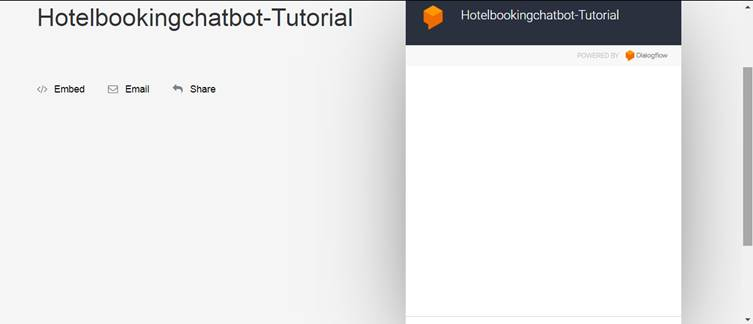
Here you can converse with your chatbot.
The working is shown in the link below.
Before integrating with telegram you have to perform some steps to make your chatbot work gobally.
● In telegram search @BotFather . Then click on the verified, official BotFather (it will have a blue tick beside its name).
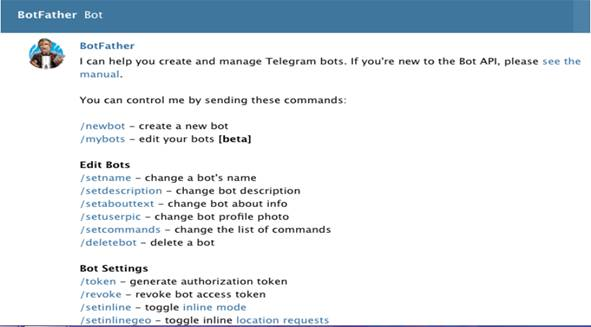
● To create a new bot type /newbot
● Answer the BotFather-s questions and choose a name and a username for your bot.
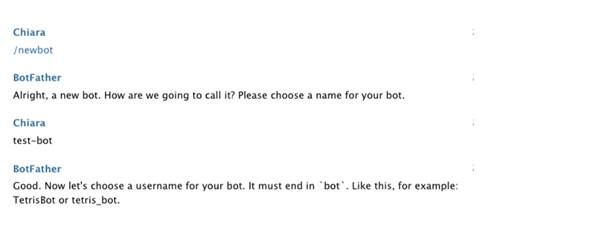
If the username you choose is already associated to another bot, BotFather will ask you change it until you find a free username.
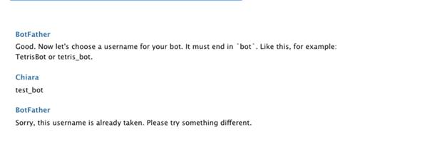
When you-ve chosen a free username, BotFather will give you the token you need along with other information.

Now in the dialogflow swipe the telegram slider and
Paste the api token key in the textfield shown.
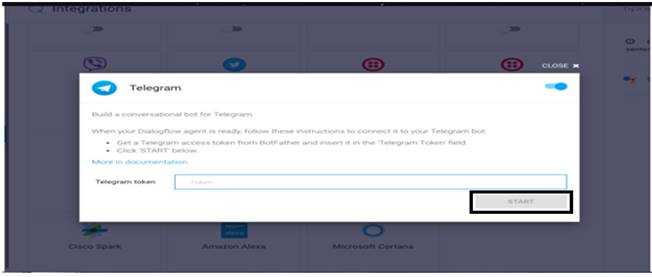
Finally click the start button to establish your bot in
Telegram platform.
Now in the search pane type the user name or bot
name in telegram and you will be able to find your
bot worldwide available to all the users.
Hurray!!! Your 1st chatbot is ready and established globally.
So now you can surprise your friends and family with the simple bot that you can create within 10 mins.
Happy Learning.
Please take up this quiz in order to complete this tutorial.